Complementação
Perfis
Funcionalidade acessada pelos seguintes perfis:
MTRADM
MTRSDNTTG
MTRSDNTTO
OBS: Solicitação de acesso via https://novoacessologico.caixa, selecionando o sistema SIMTR e, em seguida, os perfis desejados.
Ao acionar a opção referente no menu da lateral é apresentada a tela:
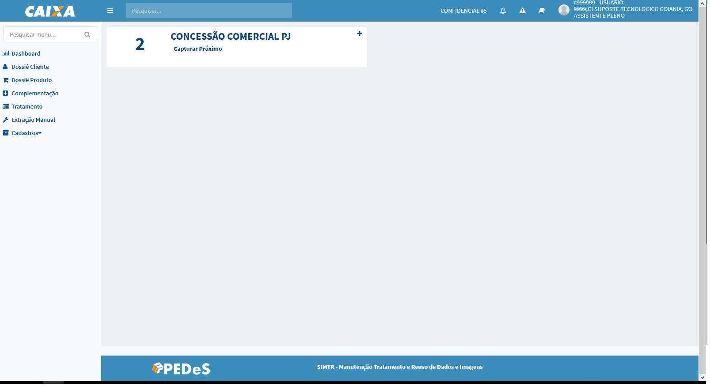
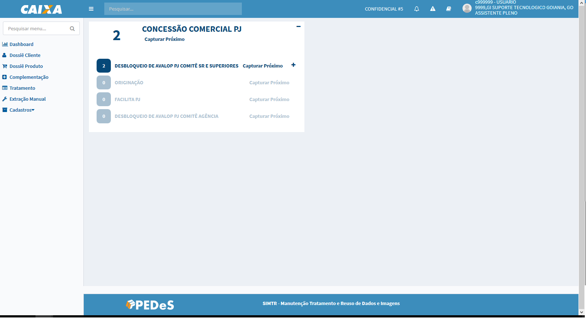
O sistema apresenta a tela com os Dossiês Produto, que estão na situação Aguardando Complementação, agrupados pelo processo em ordem alfabética, cuja unidade responsável por realizar a complementação seja a unidade de lotação do usuário autenticado.
Para cada processo é apresentado o Total de dossiês produtos aguardando complementação. Abaixo segue descrições das opções apresentadas:
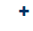 - essa opção expande a visualização dos dossiês a nível de processos gerador de dossiê;
- essa opção recolhe a expansão do nível de processos para visualização padrão;
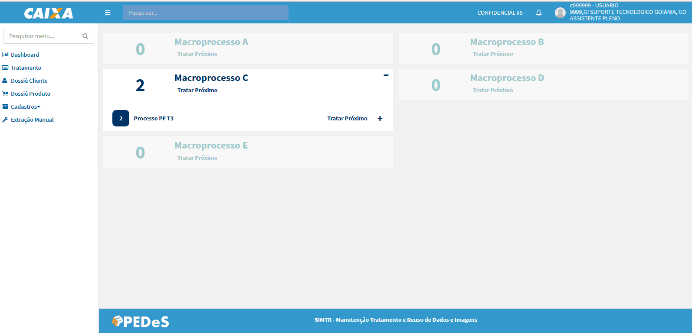
- Tratar Próximo - opção apresentada tanto na visão processo como dos processos geradpr de dossiê que quando acionada apresenta a tela de manutenção dossiê produto para complementação da informação:
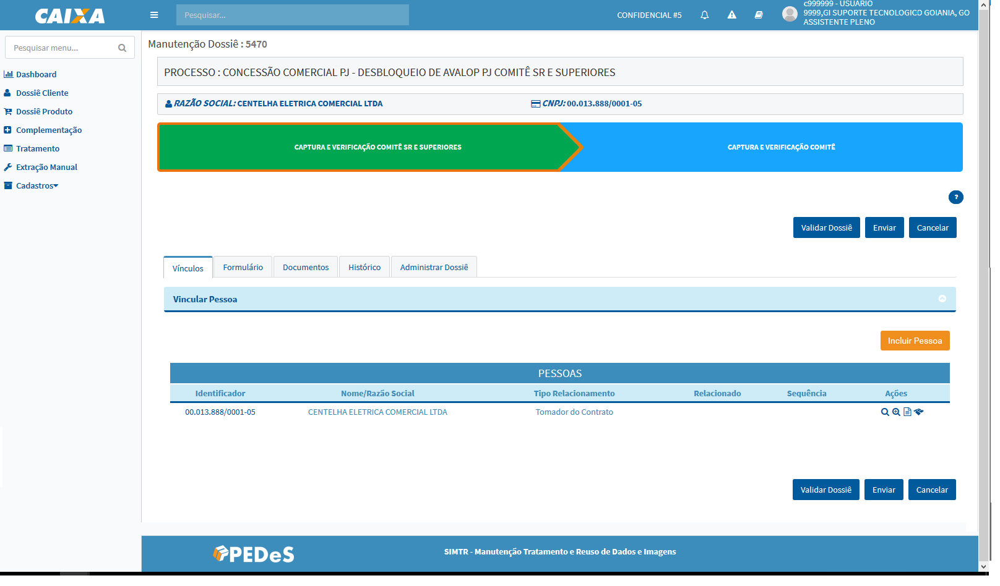
O sistema habilita todas a opções para complementação da informação necessária:
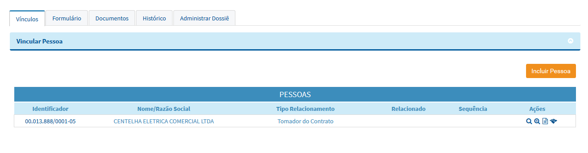
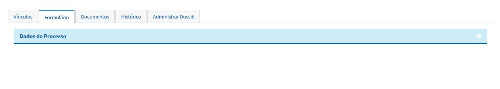
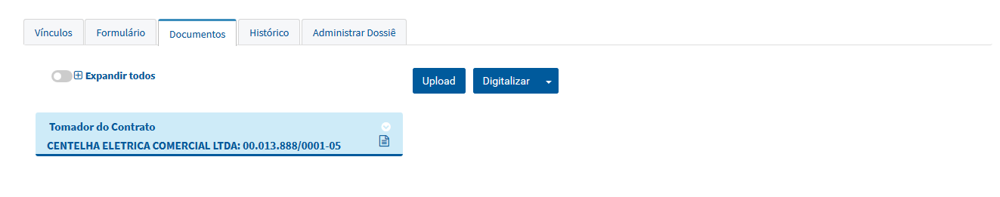
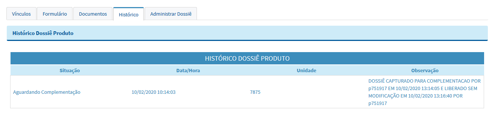
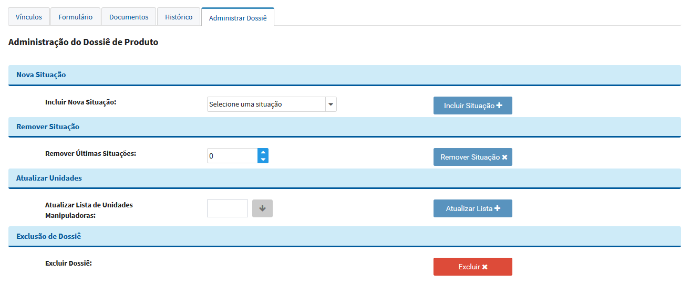
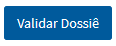 - apresenta as validações obrigatórias para o envio do dossiê para tratamento que ainda estão pendentes de complementação;
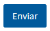 - altera a situação do dossiê para "Alimentação Finalizada" e retorna para tela de captura de dossiê para complementação;
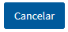 - apresenta uma mensagem para confirmar que as alterações serão descartadas, confirmando a intenção o sistema altera a situação do dossiê de "Em complementação" para "Aguardando Complementação" e retorna para tela de captura de dossiê para complementação com a lista atualizada.